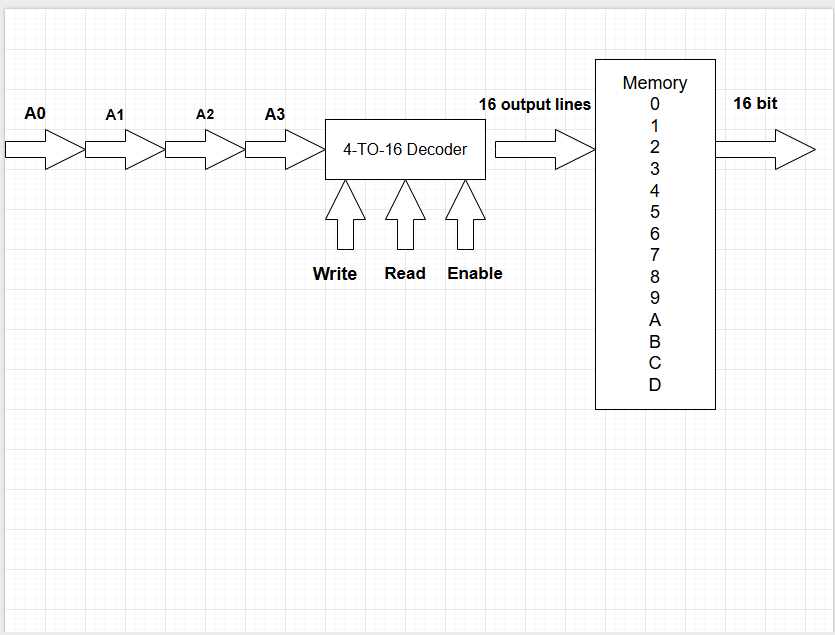
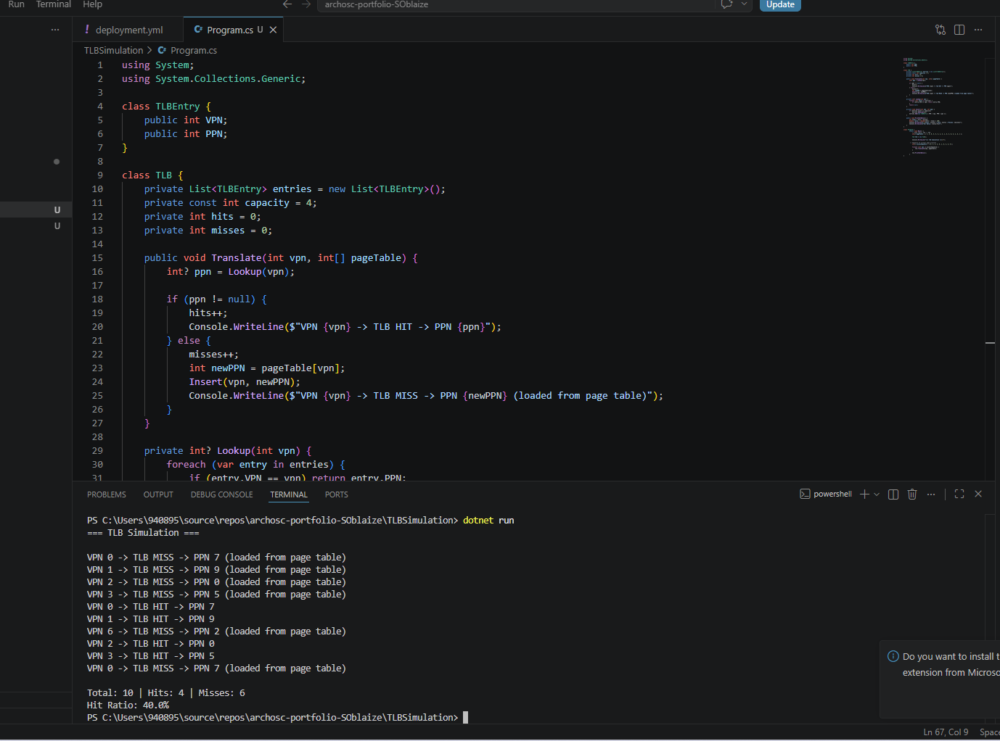

OS Memory & MMU Lab
Exploring virtual memory, page tables, address translation, TLBs, and memory-mapped decoders.
Task 1 — Virtual Memory Calculations
Part i — Page and Memory Sizes
- Virtual pages = 2⁴ = 16 virtual pages
- Page size = 2⁸ = 256 bytes per page
- Physical pages = 2³ = 8 physical pages
Part ii — Address Translation
Converting virtual address 0x2C8 to a physical address:
- Binary:
001011001000 - VPN (first 4 bits):
0010= 2 - Offset (last 8 bits):
11001000=0xC8 - Look up VPN 2 in page map → R = 1, PPN = 4
- Physical address = PPN 4 + offset 0xC8 = 0x4C8
The VPN is translated to a physical page number via the page map while the offset stays the same.

Task 2 — Page Frame Boundaries
Each page frame is 4096 bytes (4KB). End address = frame number × 4096 + 4095.
- Frame 0: ends at 4095 → D = 4095
- Frame 3: ends at 16383 → C = 16383
- Frame 5: ends at 24575 → B = 24575
- Frame 7: ends at 32767 → A = 32767

Task 3 — 32-bit Virtual Address Translation
- First 20 bits (VPN) = 6
- Last 12 bits (offset) =
0x16D
2a — Virtual Page Referenced
Virtual page = 6
2b — Page Frame Value
Looking up virtual page 6 — no entry found, R = 0 → page fault.
2c — Physical Address
No physical address exists. The OS must load the page from disk into a free frame first, then the MMU retries the translation.

Task 4 — Translation Lookaside Buffers (TLB)
4.1 — TLB Calculations
- Physical memory = 2²⁴ bytes, page size = 2¹⁰ → 16,384 pages in physical memory
- Virtual memory = 2³² bytes → 4,194,304 page table entries
- Bits per entry: 14 (PPN) + 1 (dirty) + 1 (valid) = 16 bits = 2 bytes
- Page table size = 4,194,304 × 2 = 8MB → 8,192 pages
4.2 — Physical Address for 0x1804
- VPN = 6, offset =
0x004 - TLB check → VPN 6 found, PPN = 2 → TLB hit!
- Physical address = 0x0804
Virtual address 0x0FC
- VPN = 0 → TLB miss → page map check → R = 0 → Page fault!
- OS must load the page from disk before translation can continue.


Task 5 — Memory Decoder
5.1 — Decoder Input Bits
14 memory locations need 4 bits (2⁴ = 16 addresses) → 4-to-16 decoder with 4 address bits, 16 output lines, Write/Read/Enable control lines, and a 16-bit data bus.
5.2 — Combined Address Patterns
Address format: Write, Read, Enable, A3 A2 A1 A0 (7 bits total)
- Read FEAD (index A = 1010): Write=0, Read=1, Enable=1 → 0x6A
- Write to index C (1100): Write=1, Read=0, Enable=1 → 0xAC